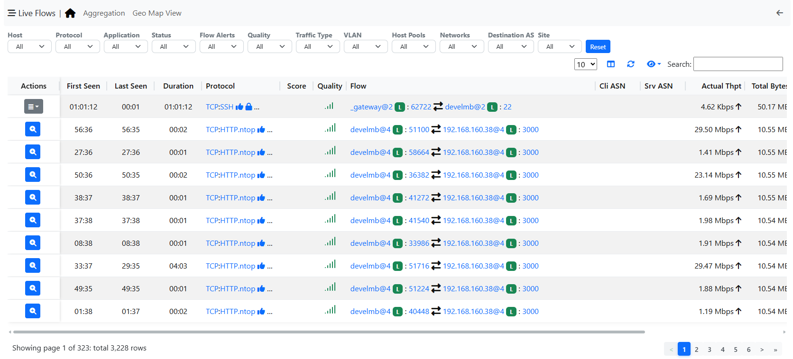
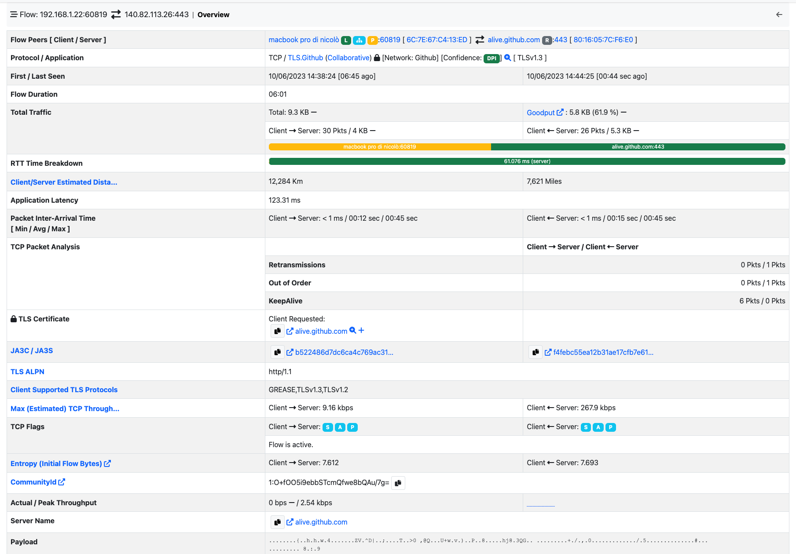
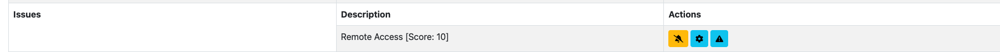
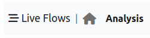
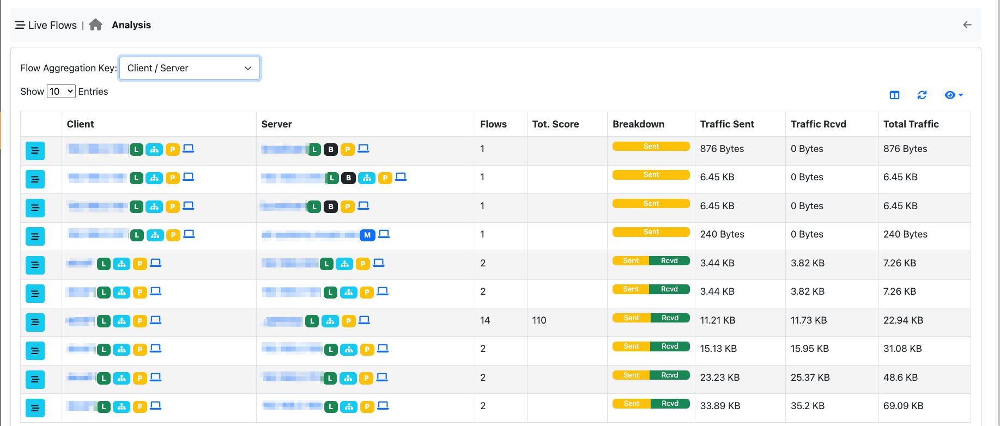
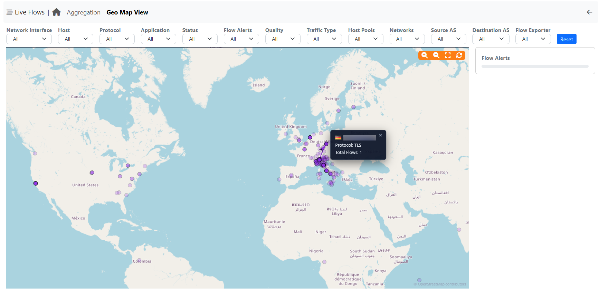

Потоки
Жить
Пункт «Потоки» на верхней панели инструментов можно выбрать для визуализации информации о дорожном движении в реальном времени на текущем маршруте. активные потоки. Поток можно рассматривать как логический двунаправленный канал связи между двумя хозяева [1]. Между одной и той же парой хостов может существовать несколько одновременных потоков.

Страница активных потоков
Потоки однозначно идентифицируются посредством пятикортежа, состоящего из:
IP-адрес источника и назначения
Порт источника и назначения
Протокол уровня 4
Каждый поток отображается в виде записи строки в таблице потоков. Потоки сортируются по приложениям, используя крайний правый выпадающее меню в правом верхнем углу таблицы. Аналогично, другое раскрывающееся меню позволяет пользователю выбрать количество потоков, отображаемых на каждой странице.
Потоки имеют несколько информационных полей, а именно: приложение, протокол уровня 4, хосты клиента и сервера. Продолжительность, разбивка клиентов и серверов, текущая пропускная способность, общее количество байтов и дополнительная информация.
Когда потоки несут информацию о процессе или контейнере (например, потоки, экспортированные nProbe с eBPF), Имена процессов и контейнеров отображаются рядом с хостами: щелкните один, чтобы увидеть только потоки этого процесса или контейнер. Поды и контейнеры страница открывает потоки пода или контейнера таким же образом; активные фильтры отображаются над таблицей и могут быть удалены по одному. Информационные поля кратко обсуждаются ниже.
Подробная информация о потоке
Если нажать кнопку «Подробности» в начале потока, подробные сведения о нем откроются на боковой панели рядом. к столу; значок развертывания панели открывает их как полную страницу. Здесь вся информация ntopng Информация о потоке отображается и обновляется каждые несколько секунд, пока поток активен (стрелка рядом со счетчиками показано, когда они растут). Когда поток больше не находится в памяти, об этом сообщается в сообщении.
Потоки промышленных протоколов (Modbus, S7Comm, Profinet: Enterprise L) и потоки, несущие BGP информация имеет больше вкладок рядом с Обзор с подробностями протокола. Вкладка неактивна когда данные недоступны, и во всплывающей подсказке указано, почему: ntopng декодирует Modbus из трафика он захватывает, в то время как данные S7Comm и Profinet отправляются nProbe для потоков, которые он собирает.
На странице сведений вы также можете:
открывать живые потоки одного и того же порта, приложения или категории, хостов клиента и сервера и их MAC-адреса;
добавьте имя сервера потока в категорию или в приложение (администраторы): нажмите кнопку + рядом с названием выберите категорию или приложение и подтвердите. Категория применяется сразу, приложение после перезапуска ntopng;
в Проблемы таблицу, исключите проверку для этого потока (Предприятие М), откройте конфигурацию проверка или оповещения потока;
на встроенных интерфейсах (nEdge) сбросьте трафик потока (администраторы): запрашивается подтверждение.

Страница сведений о потоке
Приложение
Приложение — это программа уровня 7, осуществляющая обмен данными через поток. Это кусок программное обеспечение, которое максимально приближено к конечному пользователю. Примеры приложений: Skype, Redis, HTTP и Bit. Торрент. Приложения уровня 7 обнаруживаются механизмом глубокой проверки пакетов с открытым исходным кодом NTOP (DPI). по имени nDPI [2]. В случае сбоя обнаружения приложения ntopng помечает поток как «Неизвестный». Если обнаружение успешно, отображаются имя приложения и информативный значок.
Вот список возможных информативных значков:
Значок замка указывает на то, что протокол передает информацию безопасным способом (например, через SSL).
Значки большого пальца вверх показывают, что протокол, как правило, не вредит производительности сети.
Значки с изображением большого пальца вниз указывают на то, что протокол обычно вреден для производительности сети.
Улыбка на лице говорит о том, что протокол обычно используется для развлечения пользователей.
Желтый треугольник указывает на возможную проблему в потоке. Нажав на детали потока, можно увидеть, о какой проблеме сообщается (например, поток с низкой производительностью).
Щелкните имя приложения, чтобы увидеть все хосты, генерирующие трафик для приложения.
Протокол уровня 4 (протокол L4)
Протокол уровня 4 используется на транспортном уровне. Наиболее распространенным транспортным протоколом является надежный протокол управления передачей (TCP) и лучший протокол пользовательских датаграмм (UDP).
Клиент
Это поле содержит информацию об хосте и порте, касающуюся конечной точки клиента потока. Хозяин считается клиентом, если он является инициатором потока. Информация отображается как хост:порт и обе информации. кликабельны. Если хост имеет общедоступный IP-адрес, ntopng также показывает флаг страны для этого клиента. [3] . Синий Флаг отображается, когда хост является хостом ntopng.
Сервер
Как и в случае с клиентом, это поле содержит информацию о конечной точке потока сервера. Хозяин считается сервером, если он не является инициатором потока. Мы отсылаем читателя к предыдущему абзацу, чтобы узнать подробное описание.
Продолжительность
Это количество времени, прошедшее с момента открытия потока клиентом.
Авария
Потоки являются двунаправленными, в том смысле, что трафик передается как от сервера к клиенту, так и от клиента. на сервер. Эта цветная полоса показывает объем трафика, которым обмениваются в каждом из двух направления. Трафик между клиентом и сервером показан оранжевым цветом, а трафик между сервером и клиентом — синим.
Фактическая пропускная способность
Пропускная способность вычисляется периодически (время обновления составляет несколько секунд).
Всего байт
Объем трафика, которым обмениваются потоки. Это общее значение представляет собой сумму трафика, которым обмениваются в каждом двух направлениях (клиент-сервер и сервер-клиент).
TLS Информация
ntopng предоставляет подробную информацию о потоках TLS:

Сертификат TLS, запрошенный клиентом, и имена серверов, возвращаемые сервером.
Срок действия сертификата TLS
Клиент и сервер JA3 подписи, которые представляют собой отпечатки пальцев наиболее важных информация в рукопожатии TLS. Нажав на подпись можно вручную проверьте, соответствует ли подпись известному вредоносному ПО в файле база данных «abuse.ch».
Клиент TLS АЛПН, который содержит список предоставленных протоколов приложений. клиентом во время рукопожатия TLS
Поддерживаемые протоколы TLS клиента
Эта информация очень ценна для выявления потенциальных угроз в зашифрованном трафике. которые включают, помимо прочего:
Вредоносные клиенты/сервер (путем сопоставления подписи JA3)
Сертификаты с истекшим сроком действия TLS
Используемые небезопасные протоколы TLS
MITM TLS нажать
ntopng уже сообщает о таких событиях с помощью специализированных оповещений (доступные оповещения зависит от используемой версии ntopng). Для углубленного обсуждения проблем с зашифрованным трафиком и того, как метаданные могут помочь в выявлении сетевых угроз, ознакомьтесь с соответствующим ntop сообщение в блоге и соответствующие посты.
SSH Подпись
Аналогично подписи JA3 TLS, ХАСШ это отпечаток пальца на рукопожатии SSH. ntopng генерирует отпечаток HASSH как клиентского, так и серверного хостов потока. ntopng также извлекает и визуализирует баннер приложения SSH, который обычно сообщает имя и версия используемого клиент-серверного приложения SSH.
Эта информация может быть использована для выявления устаревших и уязвимых программ, которые подорвать безопасность хозяев. Более того, отпечаток HASSH можно сопоставить с сигнатуры известных вредоносных программ для выявления известных угроз.
DNS Подпись
ntopng также извлекает и визуализирует информацию о приложении DNS. В следующем порядке сообщается тип запроса DNS, ошибка запроса DNS и запрос DNS, по стандартной классификации (RFC1035).

Информация
В этом поле доступна дополнительная информация nDPI, которую можно извлечь из обнаруженного потока. Это поле может включать URL-адреса, профили трафика (в Профессиональной версии), содержимое запросов DNS и т. д.
Проблемы
Поток может иметь некоторые проблемы (о которых сообщается в Оповещения). Обо всех проблемах потока сообщается на странице «Подробная информация о потоке».

Состояние основного и второстепенного соединения
Поток, использующий TCP в качестве протокола L4, будет иметь основное и второстепенное состояние соединения.
Основные состояния соединения:
ПОПЫТКА
УЧРЕДИЛ
ЗАКРЫТО
Для каждого основного состояния соединения существует множество второстепенных состояний соединения.
Когда основное состояние соединения ПОПЫТКА, второстепенное состояние соединения может быть одним из следующих состояний:
S0: Попытка подключения замечена, ответа нет.
РЭЙ: Попытка подключения отклонена.
РСТОС0: Клиент отправил SYN, за которым последовал RST, и мы никогда не видели SYN-ACK от сервера.
РСТРХ: Сервер отправил SYN ACK, за которым последовал RST, и мы никогда не видели SYN от (предполагаемого) клиента.
Ш: Клиент отправил SYN, за которым последовал FIN, и мы никогда не видели SYN ACK от сервера (следовательно, соединение было «наполовину» открыто).
ШР: Сервер отправил SYN ACK, за которым последовал FIN, и мы никогда не видели SYN от клиента.
ОХ: SYN не виден, только средний трафик.
Если основное состояние соединения УЧРЕДИЛ второстепенное состояние соединения
С1: Соединение установлено, но не разорвано.
Наконец, если основное состояние соединения ЗАКРЫТО, второстепенное состояние соединения может быть одним из следующих состояний:
Сан-Франциско: Обычное создание и прекращение.
С2: Соединение установлено и попытка закрытия клиента замечена (но нет ответа от сервера).
S3: Соединение установлено, и замечена попытка закрытия сервера (но ответа от клиента нет).
РСТО: Соединение установлено, клиент прерван (отправлен RST).
РСТР: Сервер отправил RST.
Анализ потока

Панель навигации Live Flows
Страница анализа потока позволяет анализировать потоки в агрегированном виде вместо классического пятикортежного анализа. Базовые критерии агрегации доступны во всех версиях ntopng, а расширенные — только в некоторых версиях Enterprise.
Протокол приложения

Этот критерий позволяет агрегировать потоки по протоколу приложения (например, WhatsApp). Это полезно для выбора всех потоков с определенным протоколом.
Клиент

Вы можете использовать этот критерий агрегирования для кластеризации всех потоков, созданных конкретным клиентом. Нажав на значок потоков, можно перейти к уровню потока из 5 кортежей.
Критерии сервера

Вы можете использовать этот критерий агрегирования для кластеризации всех потоков, нацеленных на определенный сервер. Нажав на значок потоков, можно перейти к уровню потока из 5 кортежей.
Критерии клиента/сервера/порта назначения

Вы можете использовать этот критерий агрегирования для кластеризации всех потоков с одним и тем же клиентом/сервером/DstPort. Нажав на значок потоков, можно перейти к уровню потока из 5 кортежей.
Примечание
Следующие критерии агрегирования доступны только при наличии лицензии Enterprise M или выше.
Критерии клиента/сервера

Вы можете использовать этот критерий агрегирования для кластеризации всех потоков с одним и тем же клиентом/сервером. Нажав на значок потоков, можно перейти к уровню потока из 5 кортежей.
Приложение. Критерии прототипа/клиента/сервера

Вы можете использовать эти критерии агрегирования для кластеризации всех потоков с одним и тем же протоколом приложения/клиентом/сервером. Нажав на значок потоков, можно перейти к уровню потока из 5 кортежей.
Информационные критерии

Вы можете использовать этот критерий агрегирования для кластеризации всех потоков с одним и тем же информационным полем (например, разрешенное имя хоста в потоках DNS). Нажав на значок потоков, можно перейти к уровню потока из 5 кортежей.
Просмотр географической карты
Другой способ визуализации потоков на географической карте;
Примечание
Эта функция доступна в версии Enterprise L. Геолокация необходимо включить.
При нажатии на хост потоки, относящиеся к этому узлу, будут выделены с информацией:
IP-адрес: IP-адрес хоста.
Протокол: протокол, используемый потоками
Всего потоков: количество потоков хоста.
